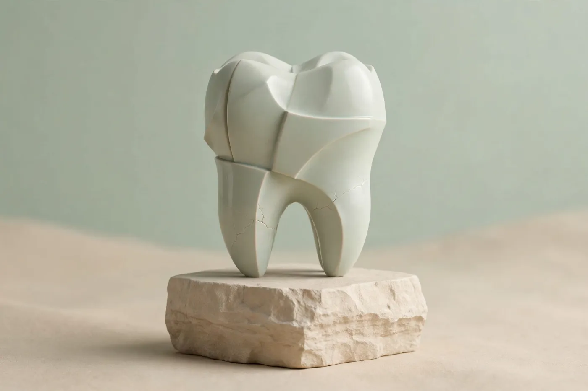

Il dentista che ti spiega tutto, con calma.
Igiene, cura della carie, ortodonzia anche invisibile, impianti, visite per i bambini ed estetica dentale. Ogni cura parte da una visita e da un preventivo scritto.

Di cosa ci occupiamo

Uno studio piccolo, dove ci si conosce per nome.
Lo studio è stato aperto nel 2006 dal Dott. Lorenzo Valdieri. Oggi lavoriamo in tre professionisti, con due poltrone e una segreteria che segue ogni paziente dalla prima telefonata.
Sappiamo che per molte persone sedersi sulla poltrona non è semplice. Per questo fissiamo appuntamenti con tempi ampi, spieghiamo cosa stiamo per fare e ci fermiamo quando serve.
Conosci lo studio e il team →Comfort in poltrona: ci fermiamo quando vuoi.
Il timore del dentista è comune e non c'è niente di cui vergognarsi. Questi sono gli accorgimenti che usiamo ogni giorno, per adulti e bambini.
Tre professionisti, sempre gli stessi volti.
Come si svolge il primo appuntamento
Dura circa un'ora. Non si inizia nessuna cura il primo giorno, salvo urgenze: prima si parla, si controlla e si decide insieme.
- 1Accoglienza e colloquioCi racconti cosa ti preoccupa, eventuali fastidi e le tue esperienze precedenti. Compiliamo insieme la scheda sulla salute generale.
- 2Visita e controlloIl dentista controlla denti, gengive e masticazione. Se necessarie, si eseguono radiografie digitali, che richiedono pochi secondi.
- 3Piano di cura spiegatoTi mostriamo cosa abbiamo visto e le possibili soluzioni, con tempi e costi indicati in un preventivo scritto.
- 4Decidi con calmaPorti a casa il preventivo e ci pensi. Quando vuoi, la segreteria fissa il primo appuntamento di cura.
Sai prima quanto spendi, e come pagarlo
I costi dipendono dalla cura che ti serve, per questo li indichiamo solo dopo la visita. Ma come funziona il pagamento è giusto saperlo da subito.
Le domande che ci fanno più spesso
Non trovi la tua? Chiedila alla segreteria al telefono o su WhatsApp.
Ho paura del dentista. Posso dirlo?
Certo, anzi ti chiediamo di dircelo già al telefono. Fissiamo appuntamenti con più tempo, spieghiamo ogni passaggio prima di farlo e concordiamo un segnale con la mano per fermarci quando vuoi.
Quanto costa e quanto dura la prima visita?
Dura circa un'ora. Il costo della visita te lo comunica la segreteria al momento della prenotazione; eventuali cure successive sono indicate nel preventivo scritto, che puoi portare a casa e valutare con calma.
Cosa devo portare al primo appuntamento?
Tessera sanitaria, eventuali radiografie o esami recenti e l'elenco dei farmaci che prendi. Se hai un fondo sanitario, porta anche il numero di adesione.
A che età portare un bambino dal dentista?
Le raccomandazioni del Ministero della Salute consigliano una prima visita intorno ai 2 anni, anche senza problemi evidenti: serve a controllare i denti da latte e ad abituare il bambino all'ambiente. Una prima valutazione ortodontica è utile verso i 6–7 anni.
Accettate assicurazioni e fondi sanitari?
Sì, con i principali fondi sanitari integrativi, in forma diretta o indiretta. Chiedi alla segreteria: verifichiamo noi cosa copre il tuo piano prima di iniziare.
Le cure dentistiche sono detraibili?
Sì, rientrano nelle spese sanitarie detraibili al 19% per la parte che supera la franchigia di 129,11 euro. Conserva la fattura e paga con un metodo tracciabile (carta, bancomat o bonifico).
Cosa faccio se ho dolore fuori orario?
Durante gli orari di apertura chiama la segreteria: per i pazienti dello studio cerchiamo un posto in giornata. Fuori orario lascia un messaggio in segreteria e ti richiamiamo alla riapertura. In caso di gonfiore al viso con febbre, difficoltà a deglutire o respirare, o di un trauma importante, rivolgiti subito al Pronto Soccorso o chiama il 112.
Ogni quanto va fatta la pulizia dei denti?
Di norma ogni 6 mesi. In alcuni casi, per esempio con gengive infiammate, apparecchi o impianti, l'igienista può consigliare richiami più ravvicinati.
Posso mandarvi una foto su WhatsApp prima di prenotare?
Sì. Se hai un dente scheggiato, una gengiva gonfia o un dubbio, inviaci una foto su WhatsApp: la segreteria la mostra al dentista, che ti dice se è il caso di venire subito e che visita prenotare. Non è una diagnosi, per quella serve la visita; in caso di dolore forte chiama.
Via delle Calendule 12, Milano
Piano terra, accessibile senza gradini. A 4 minuti a piedi dalla fermata M1 Wagner; tram 16 fermata Via Ravizza. Parcheggio a pagamento in Piazza Wagner.
- Lunedì – Venerdì
- 9:00 – 19:30
- Sabato
- 9:00 – 13:00
- Domenica
- Chiuso
La segreteria risponde al telefono dalle 9:00 alle 19:00. Per i pazienti dello studio, in caso di dolore improvviso cerchiamo un posto in giornata.